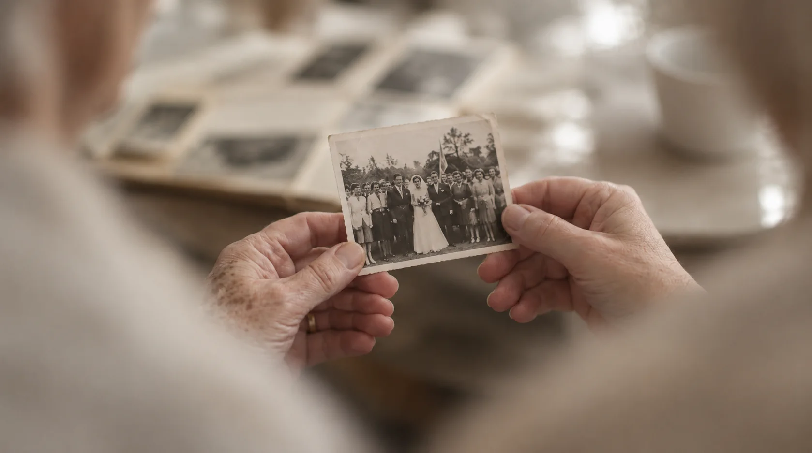
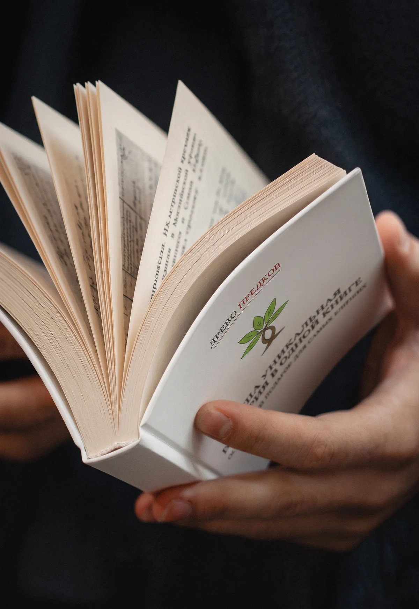
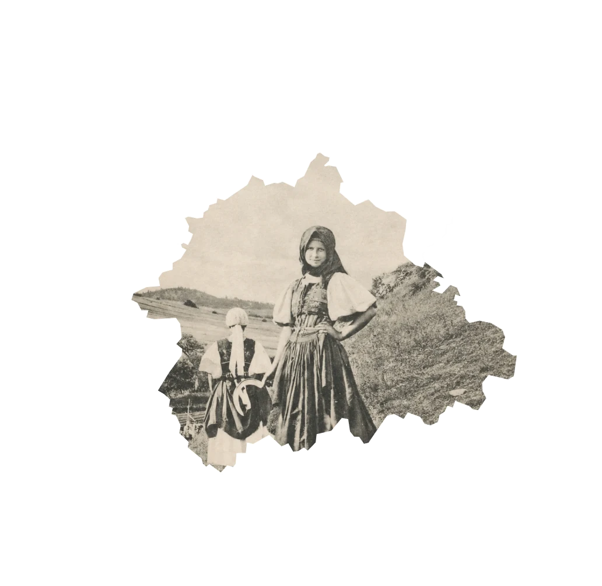
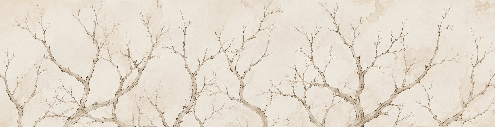

Работа сделана очень быстро, качественно, по приятной цене, вежливый и честный человек, приятно с такими сотрудничать. Максимально довольна результатом, спасибо большое!!!

Восстановим историю вашего рода по архивным документам
Ищем предков в архивах России, Украины и Беларуси — в метрических книгах, ревизских сказках, исповедных ведомостях. Каждое имя и каждая дата подтверждены документом.
Получить консультацию-
Только по документам
Каждый факт подтверждаем архивной записью. Вы получаете копии документов с расшифровкой, а не пересказ.
-
Судьбы, а не только даты
Узнаёте, кем были ваши предки, где жили, чем занимались и как их жизнь связана с событиями эпохи.
-
Читаем старые рукописи
Разбираем дореволюционный почерк, сокращения и церковнославянские записи, с которыми трудно справиться самостоятельно.
-
Начинаем с вашей семьи
Семейные рассказы, фотографии и домашние документы — отправная точка поиска и плана исследования.
Выберите формат исследования

Родословная книгаКнига об истории вашего рода: найденные документы с расшифровкой, родословное древо и рассказ о каждом поколении. Архивный свитокПоиск по архивам без большого рассказа: копии документов с расшифровкой и поколенная роспись вашего рода. Точечные исследованияОтвет на один конкретный вопрос: запись о рождении, венчании или службе предка, место жительства семьи.Отзывы заказчиков
Все отзывы на Авито →Огромное спасибо вашей команде за такой кропотливый труд! Даже при беглом прочтении родовой книги становится ясно, сколько было проведено поисков. Особенно ценно то, что сухие факты переплетаются с художественным повествованием и отсылкой к историческим событиям — это важно для понимания хода времени.
Спасибо за проделанную работу!! Генеалогическое древо очень понравилось!! Юбиляр прослезился, получив такой подарок!! В процессе работы замучила правками, спасибо за терпение!!
«Древо предков» занимается генеалогическими исследованиями. Мы находим сведения о ваших предках в архивах и складываем разрозненные записи в историю семьи — с именами, датами, местами и судьбами.
Как мы работаем
- Знакомимся с вашей семьёй. Обсуждаем, что уже известно, смотрим домашние документы и фотографии, решаем, кого и где искать. Стоимость называем заранее — она зависит от глубины и объёма поиска.
- Ищем в архивах. Изучаем метрические книги, ревизские сказки, переписи и другие источники, сверяем сведения между собой и прослеживаем судьбы предков в контексте эпохи.
- Передаём результат. По вашей задаче — найденные документы с расшифровкой, родословное древо, архивный свиток или родословная книга с рассказом о каждом поколении.
Пишем о поиске предков
Читать блог во ВКонтакте →
Илья Репин (1844-1930)
Родился в Чугуеве Харьковской губернии. Дед — Василий Ефимович Репин — неслуживый казак, владел постоялым двором и вёл торговлю. Умер в 1830-х годах. Отец — Ефим Васильевич Репин (1804-1894) после введения военных поселений в 1817 году получил статус "военного поселянина" (это звание считалось презренным среди чугуевцев-казаков). Занимался торговлей лошадьми — ежегодно ездил за 300 вёрст на Дон и пригонял табуны на…

Бор, Боровичи, Борок, Боровая, Боровня…
Путешествуя по Новгородской области, можно встретить многочисленные населенные пункты, названия которых восходят к корню бор-. Если взглянуть на растительность в округе, часто интуитивно становится понятно, что эти названия – вариации на тему бора как соснового леса. И действительно, Новгородская область славится своими хвойными лесами: они занимают половину территории, а 28% этих лесов занимают именно сосны. Корень…

Когда держишь в руках старинный документ, первое чувство — трепет. Метрическая книга XVIII века, ревизская сказка, исповедная ведомость… Бумага пожелтела, чернила выцвели, а буквы — ну точно пляшут как хотят. И возникает вопрос: как это вообще читать? Мы в проекте «Древо Предков» расшифровываем такие рукописи каждый день. И сегодня покажем вам несколько секретов, которые помогут самостоятельно разобрать текст XVIII–XIX века. Поехали!
Особенности почерков: от уставов до скорописи В XVIII–XIX веках почерки менялись. Если в XVII веке ещё встречался устав (буквы стояли ровно, как солдаты на параде), то позже в обиход вошла скоропись. Что это значит? — Буквы стали писаться слитно, с наклоном. — Появились выносные элементы — хвостики, завитки. — Одна и та же буква могла выглядеть по-разному.

Продолжаем изучать места, где жили наши предки.
А есть ли единая классификация топонимов? Их много, иногда они спорят между собой, поэтому мы не будем подробно останавливаться на громоздких классификациях лингвистов. На примере топонимов, образованных по природным признакам, а именно хвойного леса - бора, рассмотрим словообразование топонимов. Самый простой способ – прямой переход слова в топоним. Бывали в городке Бор, до которого можно добраться по канатной…

Начните с консультации
Расскажите, что уже известно о вашей семье, — подскажем, с чего начать поиск и какой формат подойдёт. Написать можно здесь или в мессенджере.
